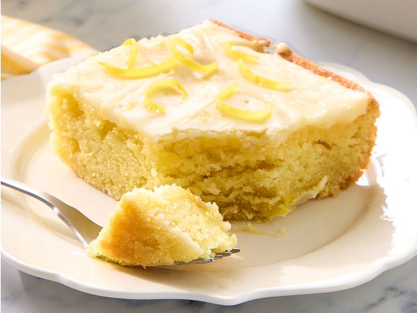

home
Lemon-Texas-Sheet-Cake

Description
A Lemon Texas Sheet Cake is a bright, refreshing twist on the classic Southern chocolate dessert. Baked in a large, shallow jelly roll pan, it features a wonderfully thin, moist, and tender sponge infused with fresh lemon zest and juice. While the cake is still warm from the oven, it is smothered in a sweet, tart lemon glaze that seeps slightly into the crust, creating a delicate, melt-in-your-mouth texture. It's the perfect balance of sweet and tangy, making it a crowd-pleasing dessert that's incredibly easy to slice and share at potlucks or summer gatherings.
Ingredients
cake
- 1 cup butter
- 1 cup water
- 2 cups all-purpose flour
- 2 cups white sugar
- 2 large eggs
- 1/2 cup sour cream
- 1 teaspoon lemon zest
- 1 teaspoon baking soda
- 1/2 teaspoon salt
Glaze
- 2 cups confectioners sugar
- 2 tablespoon 1% milk
- 6 tablespoon salted butter
- 1/4 teaspoon kosher salt
- 1/2 teaspoon lemon extract
- 2 tablespoons lemon zest
Steps
- Preheat the oven to 375 degrees F (190 degrees C). Grease a 10x15-inch baking pan.
- Bring 1 cup butter and water to a boil in a large saucepan. Remove from heat, and stir in flour, sugar, eggs, sour cream, lemon extract, baking soda, and salt until smooth. Pour batter into the prepared pan and spread into an even layer.
- Bake in the preheated oven until cake is golden and a toothpick inserted near the center comes out clean, 20 to 22 minutes. Cool for 15 minutes.
- Meanwhile, for glaze, place confectioner’s sugar in a bowl.
- Add milk, butter, and salt to a small saucepan over medium heat, and bring just to a boil, stirring occasionally; pour over confectioner’s sugar and whisk to combine. If glaze is too thin, whisk in more confectioner’s sugar. Whisk in lemon extract and lemon zest.
- Pour glaze over cake while still warm. Spread evenly over cake with a spatula. Cool completely before serving, about 50 minutes.